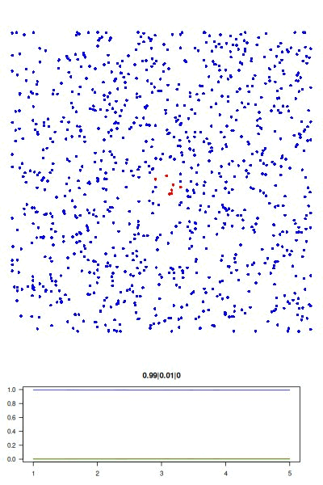

This note goes over a simple agent based model of infectious disease spread written in base R.
I do realise I'm about 5 years late to write about agent-based modelling for disease spread, but that's fine.
I was first looking at ABM frameworks such as NetLogo and Mesa, but kept running into annoying installation problems. I realised the simple model I wanted to code up doesn't really need a framework, and so wrote it quickly in base R.
I assume I have a large-ish number of agents that move around randomly within a bounded domain. Initially one agent is infected with a disease, and all others are susceptible to being infected. Whenever a susceptible agent gets close to the infected one, it also becomes infected with some probability. If an agent becomes infected, it can pass the disease on to other susceptible agents that it gets close to. After being infected for some time, the infected agent recovers. It is now not infectious anymore, and also cannot become infected again.
The full R script can be downloaded here: sir.R. No external libraries are required.
Here is the visualisation of the final result. Blue is susceptible, red is infected, and green is recovered.
I first assign all model parameters within an empty list called "agents"
# initiliase list of model parameters agents = within(list(), { n_agents = 1000 # number of agents p_inf = 0.5 # probability of infection on contact r_inf = 0.02 # radius that defines "contact", as fraction of domain width t_rec = 20 # time to recovery w_step = 0.02 # maximum step width in each direction, as fraction of domain width })
Using "within(list(), ..." instead of "list(...)" here isn't really necessary, but it makes explicit that I'm using "agents" as an environment within which the agents' state will be stored and manipulated.
Then, within "agents" I randomly initialise x and y locations of all agents, by sampling uniformly on the unit interval. The agents' current states are stored in a vector, where 0 indicates susceptible, 1 indicates infected, and 2 indicates recovered. Infection times are stored in a separate vector, initially as NA for susceptible agents. Upon infection, the time is set to recovery time, and will be decreased by one on each simulation step. I also initialise a history object in which I store the fraction of susceptible, infected and recovered agents over time.
# initialise state variables (agent coordinates, infection state, infection # time). initially, just one agent at the center is infected. agents = within(agents, { # initial locations are uniformly distributed xy = cbind(runif(n_agents), runif(n_agents)) # at first, all are susceptible (state = 0) state = rep(0, n_agents) time = rep(NA, n_agents) # i=1 is patient zero located at center xy[1, ] = c(0.5, 0.5) state[1] = 1 time[1] = t_rec # initialise history object history = matrix(nrow=0, ncol=3) })
Now for the updating function which steps the agents forward in time. In each step, agents move around by adding a small random number with mean zero to their x and y coordinates. To determine whether agents are in contact, I calculate all pairwise distances between agents and look for pairs whose distance is below a certain threshold. If an agent is infected (has state 1) then all of its neighbors that are susceptible (have state 0) randomly change their state from 0 to 1 with the given infection probability. Recovery times are decreased by one, and newly infected agents get their recovery time initialised. Agent whose recovery time reached zero get their state set to 2 for recovered. And we also append the current state to the history object.
# agent updating function (move, infect, recover) update = function(agents) within(agents, { # # move agents randomly, ensure they don't leave the domain rand_step = matrix(runif(2*n_agents, -w_step, w_step), ncol=2) xy = pmax(pmin(xy + rand_step, 1), 0) # # calculate all pairwise distances and identify neighbors distmat = as.matrix(dist(xy)) diag(distmat) = Inf # to exclude self from neighbors neighbors = which(distmat <= r_inf, arr.ind = TRUE) # randomly infect susceptible neighbors for (ii in seq_len(nrow(neighbors))) { i_from = neighbors[ii, 1] i_to = neighbors[ii, 2] if (state[i_from] == 1 & state[i_to] == 0) { state[i_to] = ifelse(runif(1) < p_inf, 1, 0) } } # # decrement recovery time of infected, initialise recovery time of newly # infected, and recover agents where recovery time is zero time = pmax(time - 1, 0) time[ is.na(time) & state == 1 ] = t_rec state[ time == 0 ] = 2 # update history new_row = c(s=mean(state==0), i=mean(state==1), r=mean(state==2)) history = rbind(history, new_row, deparse.level=0) })
Visualisation is optional, but fun. The visualise function produces a plot of agents positions with their state color coded. And it produces a second plot showing the history.
# visualisation function: scatter plot of agents and time series of SIR # history. use dev.hold and dev.flush to avoid flickering plots. visualise = function(agents) with(agents, { dev.hold() layout(c(rep(1,3), 2)) # plot agents par(mar=c(0,0,0,0)) plot(xy, col=c('blue','red','green')[state+1], pch = 16, ann=FALSE, axes=FALSE, asp=1, xlim=c(0,1), ylim=c(0,1)) # plot history par(mar=c(3,3,3,3)) matplot(history, type='l', las=1, col=c('blue','red','green'), lty=1, ylim=c(0,1), main = paste(tail(history, 1), collapse='|')) dev.flush() })
With the agents object intialised and the update and visualise functions defined, we can repeatedly update the agents state in a loop and visualise them in each step. We monitor the history and stop the simulation when nothing changes over a number of steps.
# main loop: simulate, visualise, check for stopping condition while(1) { agents = update(agents) visualise(agents) # stop if state doesn't vary for 50 timesteps past = tail(agents$history, 50) var_past = apply(past, 2, var) if (nrow(past) == 50 && all(var_past == 0)) { break } }
ABM frameworks are usually implemented using object oriented frameworks. This is because each agent has a state which constantly changes based on its own state and that of other agents. I first considered using one of R's formal OOP frameworks, but the model is simple enough to store the state of all agents within a list that contains model parameters, locations, infection state, etc, and run the time stepping code inside that list using the "within" function.
Apart from being coded in base R, the main bottleneck of the code is currently that I calculate distances between all pairs of agents to determine neighborhood. To make this more efficient, I could calculate only distances for infected agents. But that's for another day.